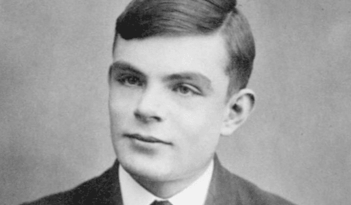

Alan Turing fue un matemático, informático y criptógrafo británico, conocido principalmente por su trabajo en descifrar los códigos alemanes durante la Segunda Guerra Mundial y por ser uno de los padres de la informática moderna. A continuación se resumen algunas de sus obras más importantes:
1. "On Computable Numbers, with an Application to the Entscheidungsproblem" (1936): Este es el artículo en el que Turing presenta su concepto de la "máquina de Turing", un modelo teórico de una computadora que puede realizar cualquier cálculo que se pueda realizar mediante un algoritmo.
2. "The Bombe": Durante la Segunda Guerra Mundial, Turing trabajó en el desarrollo del Bombe, una máquina electromecánica utilizada para descifrar los códigos de la máquina Enigma utilizada por los alemanes para comunicarse. El Bombe se utilizó con gran éxito en la Operación Ultra, que fue crucial para la victoria de los Aliados.
3. "Computing Machinery and Intelligence" (1950): En este artículo, Turing propone una prueba para evaluar la inteligencia artificial, conocida como la "prueba de Turing". La prueba consiste en que un juez humano tenga que determinar si una conversación que tiene con una máquina es con una persona o con una máquina.
4. "The Chemical Basis of Morphogenesis" (1952): Este artículo trata sobre un tema muy diferente a los anteriores, ya que Turing presenta un modelo matemático para explicar cómo se forman los patrones en los seres vivos, como por ejemplo las manchas en las pieles de los animales.
La vida y obra de Alan Turing son verdaderamente impresionantes. Como uno de los padres de la informática moderna, su trabajo en el campo de la computación ha tenido un impacto profundo en la sociedad en todo el mundo. Su concepto de la "máquina de Turing" es fundamental para la teoría de la computación y es una de las razones por las cuales es considerado una figura tan importante en la historia de la informática. Además de sus contribuciones a la informática, Turing también fue fundamental en la lucha contra los nazis durante la Segunda Guerra Mundial, trabajando en la descodificación de los mensajes alemanes. Su trabajo en el proyecto Ultra fue crucial para la victoria de los Aliados, y la máquina Bombe que desarrolló ayudó a descifrar los códigos de la máquina Enigma. A pesar de sus importantes contribuciones, Turing fue perseguido y discriminado por ser homosexual. Fue condenado por homosexualidad en 1952 y obligado a someterse a una castración química. Trágicamente, se suicidó en 1954 a los 41 años. Es profundamente injusto que una persona que hizo tanto por la sociedad haya sido tratado de esta manera debido a su orientación sexual. Afortunadamente, desde entonces se han reconocido sus contribuciones y se ha hecho justicia en su memoria. Turing es recordado como un héroe de la ciencia y un símbolo de lucha contra la discriminación y la injusticia.
Mi opinión sobre Alan Turing es que fue un verdadero pionero en la informática y un héroe de la Segunda Guerra Mundial. Su trabajo en el campo de la computación ha sido fundamental para el desarrollo de la tecnología moderna, y su enfoque innovador y visionario ha cambiado el curso de la historia. Turing también es un ejemplo de perseverancia y coraje. A pesar de las dificultades que enfrentó debido a su orientación sexual, nunca renunció a sus ideales y continuó trabajando incansablemente para hacer del mundo un lugar mejor. Es profundamente triste que la sociedad haya tratado a Turing de manera tan injusta y discriminatoria debido a su orientación sexual, y su trágica muerte es una pérdida incalculable para la ciencia y la humanidad en general. Sin embargo, su legado vive en los numerosos avances y descubrimientos que hizo a lo largo de su carrera, y en su ejemplo de valentía y perseverancia en la lucha contra la discriminación y la injusticia. Turing es una figura que merece ser recordada y admirada por generaciones venideras.
Elaborado por Daniel Pareja Franco
[1]. Curious Minds. (2017, octubre 24). What is machine learning? [Video]. YouTube. https://youtu.be/v5rPVciWAvw
[2].Wikipedia contributors. (s.f.). Alan Turing. Recuperado el 15 de febrero de 2023, de https://es.wikipedia.org/wiki/Alan_Turing